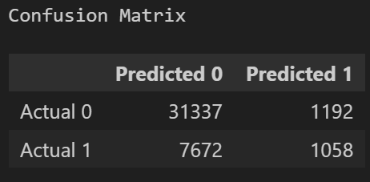
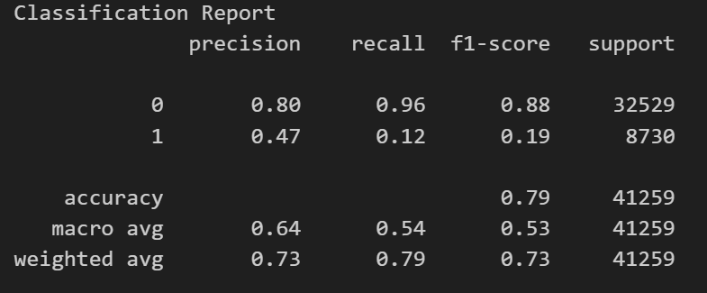
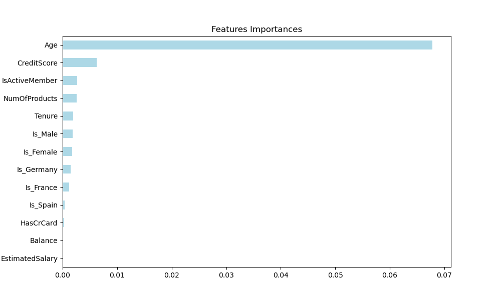
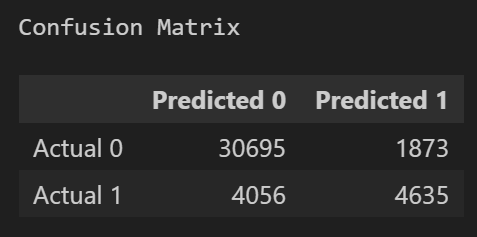
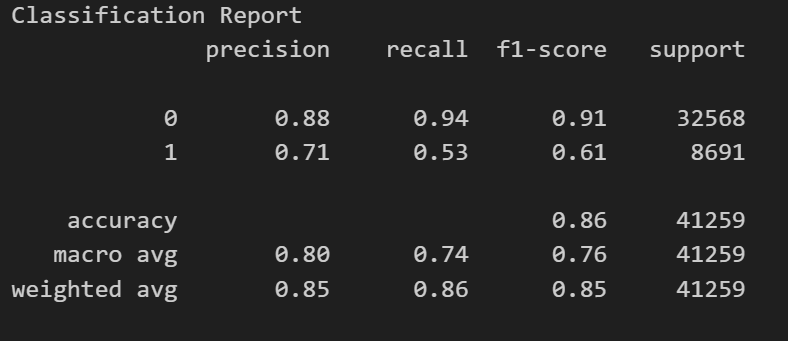
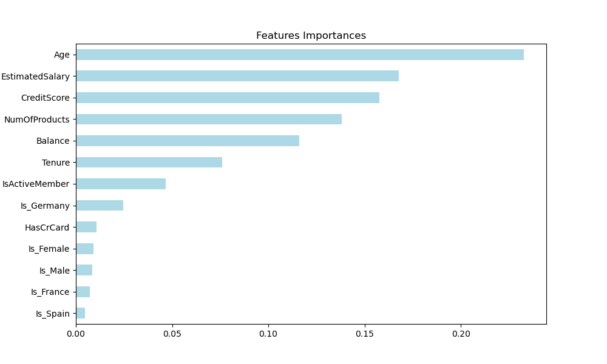
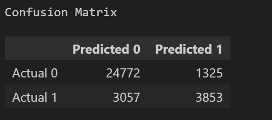
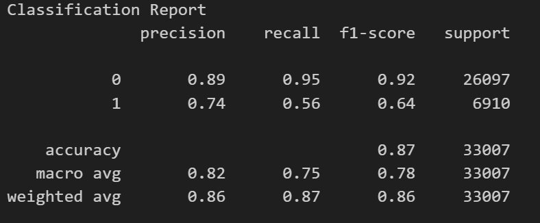
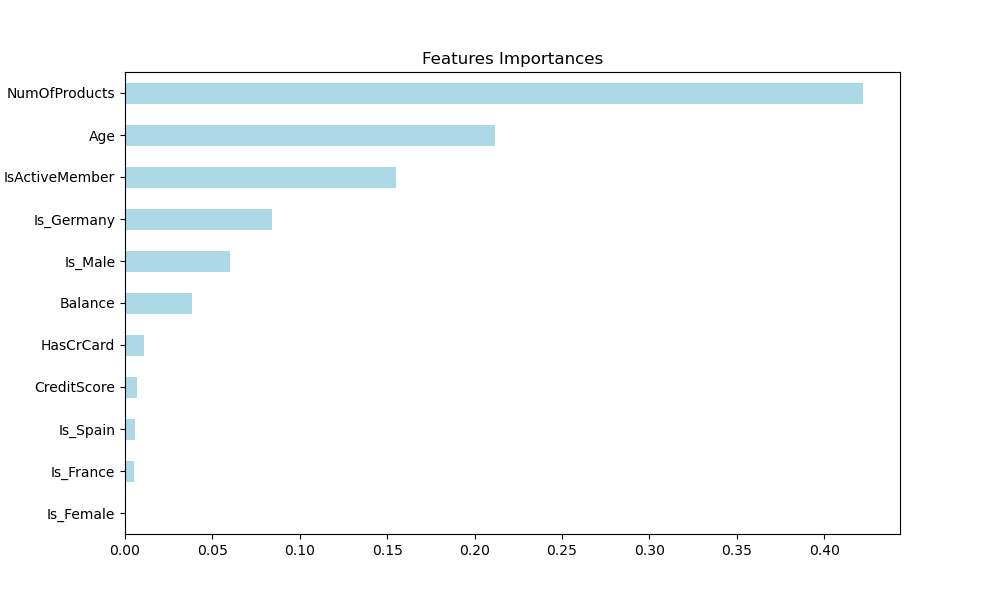

Our first attempt at creating a model in our data was using the Logistic Regression model. Using the data, we used the Exited features as our target variable to predict whether a customer will leave or stay.
First we had to clean the data and format the data to fit the model.
Our first step of cleaning the data was removing any n/a values and standardising variables by converting them into binary
Variables such as: Gender, Geography were standardised by separate columns and populated using binary fields
We trained the model using the clean dataset and with the following classifier:
The model gave a accuracy score of: 0.7851620252550958
Below are the results of Confusion Matrix and Classification Report
  According to the results, Accuracy was not a very high level. Exploring different models more suited for this type of dataset might yield better results.
Classification report states that precision and recall gave a high score for 0 (clients that stayed) but poor performance for 1 (clients that leave). The confusion matrix also highlighted similar results, showing that there are higher ratio of false positives for 1 (clients that leave) than 0 (clients that stay)
Our second attempt at creating a model in our data was using the Random Forest model. Random Forest is widely used in the industry to calculate customer rentention/churn because of its handing of feature importance and non-linear data
The ease of tune of the model also helped create a more accurate result.
First we had to clean the data and format the data to fit the model.
As per our first attempt, we cleaned the data using the methods in our previous model
Variables such as: Gender, Geography were standardised by separate columns and populated using binary fields
During our training of the data, we found some features less important and experimented with cleaning the data further, by exluding less important features
We also included the Standard Scaler method to smooth our our test and training data, hoping to get a better accuracy score.
We used the below Classifier parameters for the model:
The model gave a accuracy score of: 0.8562980198259773
Below are the results of Confusion Matrix and Classification Report
  According to the results, Accuracy at higher level. Favoured by the industry, random forest model for this type of dataset significantly improved accuracy. It is also telling that certain features are weighted heavier than others such as age and Estimated Salary
Classification report states that precision and recall gave a high score for 0 (clients that stayed) but poor performance for 1 (clients that leave). The confusion matrix also highlighted similar results, showing that there are closer ratio of false positives for 1 (clients that leave) than 0 (clients that stay). However to improve the accuracy of the model we also tried another model, XGBoost
Our third attempt at creating a model in our data was using the XGBoost model. Ensemble learning by using multiple learning algorithms such as decision trees to help improve the performance
Gradient boosting to minimise loss in learning model - adjust performance model based on errors made
Also taking advantage of SMOTE and recommended hyperparameters makes this model efficient to use and train
First we had to clean the data and format the data to fit the model.
As per our first and second attempt, we cleaned the data using the methods in our previous model
Variables such as: Gender, Geography were standardised by separate columns and populated using binary fields
During our training of the data, we found some features less important and experimented with cleaning the data further, by exluding less important features
We also included the Standard Scaler method to smooth our our test and training data, hoping to get a better accuracy score.
We used the below hyperparameters for the model:
The model gave a accuracy score of: 0.8672705789680977
Below are the results of Confusion Matrix and Classification Report
  According to the results, accuracy has been the best out of the other models. Using the SMOTE techinque, it improved the confusion matrix by predicting better 1 (clients that leave) while keeping 0 also pretty accurate
We recommend using XGBoost model because:
Classification report states that precision and recall gave a high score for 0 (clients that stayed) and better performance for 1 (clients that leave). However to improve the accuracy of the model, having a larger dataset and exploring creative techniques might improve results.